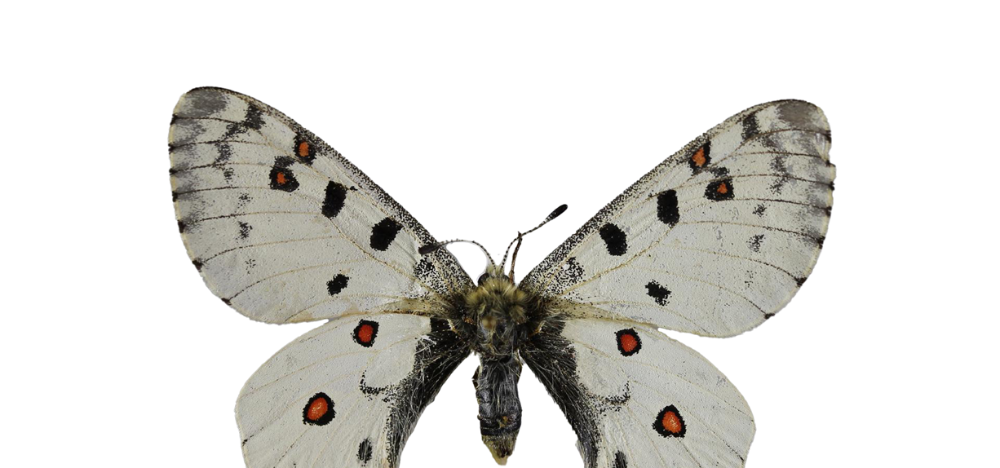
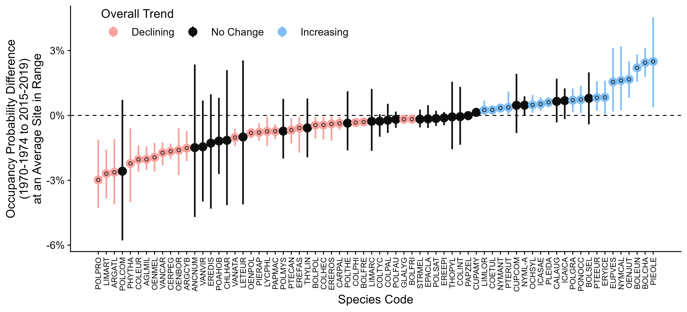
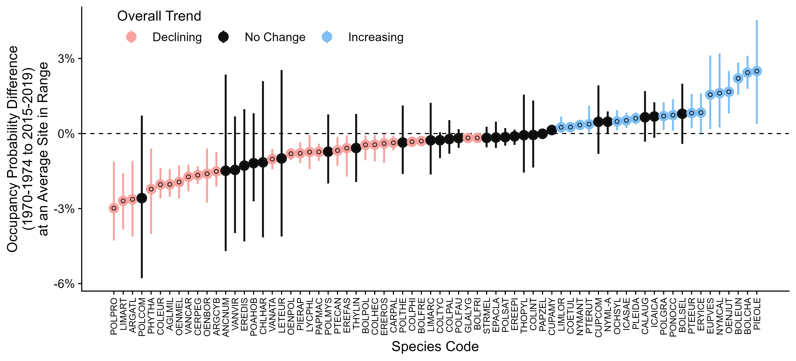

Vaughn M. Shirey
Publications
+ indicates mentee. | * indicates equal contribution.
| P.012 M. Belitz, E. Larsen, V. Shirey, D. Li, and R. Guralnick. 2022.
"Phenological research based on natural history collections: practical guidelines and a Lepidopteran case study." Functional Ecology. In press. |
|
| P.011 F.X. Palacio, C. Callaghan, P. Cardoso, E.J. Hudgins, M. Jarzyna, G. Ottaviani, F. Riva, G. Roza, V. Shirey, and S. Mammola. 2022. "A protocol for reproducible functional
diversity analyses." Ecography. In press. |
|
| P.010 V. Shirey, E. Larsen, A. Doherty, C. Kim+, F. Al-Sulaiman+, J. Hinolan, M. Naive, M. Itliong, M. Ku, M. Belitz, G. Jeschke, V. Barve, A.Y. Kawahara,
R. Guralnick, N. Pierce, D. Lohman, and L. Ries. 2022. "LepTraits 1.0: A globally comprehensive dataset of butterfly traits." Scientific Data 9(1): 1-7. |
|
| P.009 V. Shirey, R. Khelifa, L. M'Gonigle, and L.M. Guzman. 2022.
"Occupancy-detection models with museum specimen data: promise and pitfalls." Methods in Ecology and Evolution. In press.
10.1111/2041-210X.13896 |
|
| P.008 S.C. Mason Jr., V. Shirey, L. Ponisio, and J.K. Gelhaus. 2021. "Responses from bees, butterflies, and ground beetles to different fire characteristics: A global meta-analysis."
Biological Conservation 261. 10.1016/j.biocon.2021.109265 |
|
| P.007 V. Shirey, A.P.S. Carvalho, and A.Y. Kawahara. 2021. "Early evidence for sexually dimorphic, ultraviolet eyespots in Parnassius smintheus, Doubleday, [1847]."
The Journal of the Lepidopterists' Society 75 (3): 215-216. |
|
| P.006 E. Larsen and V. Shirey. 2021. "Method matters: pitfalls in analysing phenology from occurrence records." Ecology Letters (24 (6): 1287-1289. |
|
| P.005 V. Shirey, M. Belitz, V. Barve, and R. Guralnick. 2021. "A complete inventory of North American butterfly occurrence data: narrowing data gaps but increasing bias."
Ecography 44 (4): 537-547. |
|
| P.004 V. Shirey, S. Seppälä, V.V. Branco, and P. Cardoso. 2019. "Current GBIF occurrence data demonstrates both promise and limitations for potential red listing of spiders."
Biodiversity Data Journal 7. |
|
| P.003 P. Cardoso, V. Shirey, S. Seppälä, S. Henriques, M.L. Draney, S. Foord, A.T. Gibbons, L.A. Gomez, S. Kariko, J. Malumbres-Olarte, M. Milne,
and C.J. Vink. 2019. "Globally distributed occurrences utilized in 200 spider species conservation profiles (Arachnida: Araneae)." Biodiversity Data Journal 7. |
|
| P.002 V. Shirey. 2018. "Visualizing natural history collection data provides insights into collection development and bias." Biodiversity Data Journal 6. |
|
| P.001 K. Seltmann, S. Lafia, D.L. Paul, S.A. James, D. Bloom, N. Rios, S. Ellis, U. Farrell, J. Utrup, M. Yost, E. Davis, R. Emery, G.
Motz, J. Kimmig, V. Shirey, E. Sandall, D. Park, C. Tyrrell, S. Thackurdeen, M. Collins, V. O’Leary, H. Prestridge, C. Evelyn,
B. Nyberg. 2018. "Georeferencing for Research Use (GRU): an integrated geospatial training paradigm for biodiversity researchers and data providers."
Research Ideas and Outcomes 4. |
In Progress (review or revision)
| A.Y. Kawahara, C. Storer, A.P.S. Carvalho, D.M. Plotkin, F. Condamine, M.P. Braga, ..., V. Shirey, D. Soltis, P. Soltis, ..., and D.J. Lohman.
"Evolution and diversification of butterflies." In revision at Nature Ecology and Evolution |
|
| T. Rippel*, C. Minsavage-Davis*, V. Shirey, and G. Wimp.
"Grass is always greener: remote sensing and machine learning reveal severe and enigmatic loss of a salt marsh foundation species."
In review at Estuarine, Coastal, and Shelf Science. |


Core Research Themes
- (1) Historical insect ecology at large spatiotemporal scales, especially in response to climate change, habitat loss, pesticide use, and other global change processes.
- (2) Changes in color and morphology of insects through space and time derived from natural history museum and community science photography.
- (3) Bayesian hierarchical models, machine learning, automation, and emerging approaches in computational inference for ecology and conservation.
Research Fellowships
- National Science Foundation Graduate Research Fellowship ('19-23)
- The Arctic Institute Arctic Winter College Fellow ('20)
- Fulbright Finland Study/Research Fellowship ('17-18)
Research Awards
- Georgetown STEM for the Public Good Award ('22)
- Global Biodiversity Information Facility Young Researchers Award ('20)
- D.C. Explorers' Club Field Exploration and Research Grant ('19)
- Excellence in Undergraduate Research Award ('15)
Visualizations

{kind=link}